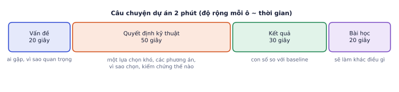

Giai đoạn P10 · Portfolio và đi làmTuần 24–45Có nội dung đầy đủ
Nhà tuyển dụng và khách hàng freelance không chấm điểm số bài bạn đã học, họ nhìn bằng chứng: dự án chạy được, có số đo, giải quyết vấn đề thật. Phân tích tin tuyển dụng cho thấy phần lớn nhà tuyển dụng muốn ứng viên đã ship ít nhất một dự án LLM hoặc ML. Bài này giúp bạn chọn, làm và trình bày 3 dự án chủ lực từ những gì đã làm trong lộ trình, với tiêu chí chấm cụ thể và ví dụ trước/sau.
Vì sao dự án quan trọng hơn chứng chỉ
Vì sao cần học
Người tuyển dụng không kiểm chứng được "đã học khóa X", nhưng kiểm chứng được một repo có README rõ, demo chạy, bảng kết quả. Với freelance, khách gần như chỉ nhìn portfolio và đánh giá. Ba dự án tốt là thứ biến 9 phần trước của lộ trình thành cơ hội việc làm.
Người xem portfolio thường dành rất ít thời gian cho mỗi dự án. Trong khoảng đó, họ cần thấy được: dự án giải quyết vấn đề gì, chạy thật không, tốt tới mức nào, và bạn đã làm phần nào.
Thế nào là dự án portfolio tốt
Tiêu chí
Dự án yếu
Dự án mạnh
Vấn đề
"chatbot với LangChain"
"trợ lý hỏi đáp quy chế đào tạo cho sinh viên, trả lời có trích dẫn"
Số đo
không có
recall@5 0.86, judge 2.6/3, p95 2.1 s, so với baseline
Phần tự làm
gọi API theo hướng dẫn
tự viết eval, chọn cấu hình bằng ablation, tự xử lý lỗi
Chạy được
chỉ trên máy tác giả
link demo, Docker, hướng dẫn chạy
Trình bày
README 2 dòng
README có ảnh, bảng kết quả, kiến trúc, hạn chế
Ba dự án sâu tốt hơn mười dự án làm theo tutorial. Dự án theo tutorial (phân loại chó mèo, chatbot PDF cơ bản) có hàng nghìn bản giống hệt trên GitHub, nên không phân biệt được bạn với ai.
Điều gì làm dự án "của bạn"
Dữ liệu riêng: tài liệu thật (quy chế trường, chính sách một shop), dữ liệu tiếng Việt, ảnh tự chụp. Dữ liệu riêng buộc bạn giải quyết vấn đề thật mà tutorial không có.
Một quyết định có đo lường: "thử 3 cách chia đoạn, chọn cách B vì recall@5 cao hơn 9 điểm" cho thấy bạn làm kỹ sư, không chỉ chạy code mẫu.
Hạn chế trung thực: nêu được model sai ở đâu và vì sao cho thấy bạn hiểu hệ thống sâu hơn người chỉ khoe kết quả tốt.
Ba dự án chủ lực từ lộ trình
Tạo ảnh bằng diffusion + LoRA (P5): cho thấy hiểu sâu model sinh, tự viết DDPM, fine-tune, đánh giá, đóng gói app. Hợp với hướng nghiên cứu và là bản làm lại đồ án tốt nghiệp ở mức cao hơn.
Hệ RAG có eval và giám sát (P4 + P8): kỹ năng được tuyển nhiều nhất. Hybrid search, reranker, bộ eval, API, Docker, dashboard.
Model chuyên biệt cho tiếng Việt, hoặc dự án EPIC-KITCHENS (P3, P6, P7): fine-tune LLM/VLM cho một tác vụ tiếng Việt có số đo so với baseline; hoặc dự án video/anticipation gắn với hướng robotics.
Ba dự án phủ ba mảng: model sinh, ứng dụng LLM, model chuyên biệt. Mỗi cái là một câu chuyện riêng khi phỏng vấn, và mỗi cái hợp với một kiểu việc: ứng dụng LLM cho freelance và công ty sản phẩm; diffusion và EPIC-KITCHENS cho vị trí nghiên cứu.
Cấu trúc một dự án
README.md một câu, demo, kết quả, kiến trúc, cách chạy, hạn chế
docs/ báo cáo đánh giá, sơ đồ
src/ code dạng module, không chỉ notebook
notebooks/ thí nghiệm, có output
eval/ bộ eval và script chạy
tests/ test cho phần quan trọng
Dockerfile, docker-compose.yml
README theo thứ tự người đọc cần
Thứ tự
Phần
Trả lời câu hỏi
1
Một câu + ảnh/GIF demo + link
cái này là gì, trông thế nào
2
Bảng kết quả so với baseline
tốt tới mức nào
3
Kiến trúc (sơ đồ) và quyết định chính
làm thế nào, vì sao
4
Cách chạy (vài lệnh)
tôi thử được không
5
Hạn chế và việc tiếp theo
tác giả hiểu giới hạn không
Ví dụ từng bước
Viết lại một mô tả dự án:
Trước
Sau
"Dự án phân loại cảm xúc review bằng BERT."
"Phân loại cảm xúc review sản phẩm tiếng Việt (3 nhãn) cho shop nội thất. PhoBERT fine-tune đạt macro-F1 0,87 trên 600 review test, so với 0,74 của LLM few-shot; chạy CPU 40 ms/review. Phân tích lỗi: nhầm nhiều nhất ở review mỉa mai."
Bản sau có: đối tượng (shop nội thất), dữ liệu (tiếng Việt, 600 review test), số đo so với baseline, chi phí chạy, và một hạn chế cụ thể. (Số liệu ở đây là minh họa; dùng số của bạn.)
Lỗi hay gặp
Đẩy notebook chưa chạy lại từ đầu. Notebook có ô lỗi, output cũ không khớp code, đường dẫn C:\Users\... cứng trong code: người xem mở ra là mất tin tưởng ngay. Trước khi công khai: "Restart and run all", xóa đường dẫn cá nhân, kiểm tra lịch sử git không có file .env hay khóa API.
Câu chuyện dự án
Chuẩn bị một bản kể 2 phút cho mỗi dự án:

Phần lớn thời gian dành cho quyết định kỹ thuật: đó là nơi phỏng vấn viên đào sâu.
Vấn đề: ai gặp, vì sao quan trọng.
Quyết định kỹ thuật: một lựa chọn khó, các phương án đã cân nhắc, vì sao chọn, kiểm chứng bằng cách nào.
Kết quả: con số so với baseline.
Bài học: điều bạn sẽ làm khác nếu làm lại.
Phỏng vấn viên thường hỏi tiếp: "Nếu dữ liệu gấp 100 lần thì sao?", "Con số này đo thế nào, trên bao nhiêu mẫu?", "Phần nào bạn tự làm?". Chuẩn bị trả lời trước cho cả ba.
Ghi nhớ: mỗi dự án cần trả lời được câu "bạn biết nó tốt bằng cách nào?". Câu trả lời là bộ eval và con số.
Tự kiểm tra nhanh
Tóm tắt bài và thuật ngữ
Chủ đề
Ý chính
Dự án tốt
vấn đề cụ thể, số đo, phần tự làm, chạy được, trình bày rõ
"Của bạn"
dữ liệu riêng, quyết định có đo lường, hạn chế trung thực
Ba dự án
diffusion + LoRA; RAG có eval; model tiếng Việt hoặc EPIC-KITCHENS
README
một câu + demo → kết quả → kiến trúc → cách chạy → hạn chế
Câu chuyện
vấn đề → quyết định → kết quả → bài học, 2 phút
Thuật ngữ
Nghĩa
portfolio
tập dự án làm bằng chứng năng lực
baseline
mốc so sánh (cách đơn giản hơn, model gốc)
ablation
thử bỏ hoặc đổi từng thành phần để đo đóng góp
demo
bản chạy được để người khác thử
model card
tài liệu mô tả model, dữ liệu, cách dùng, hạn chế
Ô tự chấm đã giải đúng0 / 3
Bài 1
Ngân sách thời gian
tính tay
Bạn có 20 giờ/tuần trong 12 tuần cho portfolio. Mỗi dự án chủ lực cần khoảng 60 giờ làm và 10 giờ viết README, quay video.
Lời giải
240 giờ có, 210 giờ cho 3 dự án, còn 30 giờ cho CV, blog, ứng tuyển. Nếu thiếu, cắt bớt phạm vi từng dự án chứ đừng bỏ phần eval và README.
Bài 2
Chấm hai mô tả dự án
khái niệm
Chấm từng mô tả theo 5 tiêu chí trong bảng lý thuyết (0–2 điểm mỗi tiêu chí) và viết lại mô tả yếu hơn.
A: "Xây dựng chatbot AI sử dụng LangChain, OpenAI và Streamlit. Chatbot có thể trả lời câu hỏi về tài liệu."
B: "Trợ lý hỏi đáp quy chế đào tạo (120 trang) cho sinh viên. Hybrid search + reranker đạt recall@5 0.86 (so với 0.71 khi chỉ dùng vector), câu trả lời có trích dẫn. Bộ eval 60 câu, LLM-as-judge đồng ý với người 85%. API FastAPI, Docker, p95 2.1 s."
Lời giải
A khoảng 2/10: có công nghệ nhưng không có vấn đề cụ thể, số đo, phần tự làm, demo. B khoảng 8–9/10, thiếu link demo. Viết lại A: nêu tài liệu gì, cho ai; một kỹ thuật bạn chọn và vì sao; một con số so với baseline; link demo.
Bài 3
Một câu cho mỗi dự án
khái niệm
Viết một câu (dưới 30 từ) giới thiệu mỗi dự án chủ lực của bạn, nói rõ: làm gì, cho ai, điểm khác biệt.
Lời giải
Ví dụ: "Ứng dụng tạo ảnh sản phẩm nội thất phong cách thống nhất từ mô tả, dùng LoRA tự train trên 20 ảnh, tăng tỉ lệ được chọn từ 31% lên 69% trong khảo sát mù." Câu tốt có đối tượng, kết quả đo được, và một chi tiết kỹ thuật riêng.
Bài 4
Kế hoạch mốc
thiết kế
Lập kế hoạch 4 tuần cho dự án RAG (dự án 2): mỗi tuần một mốc có sản phẩm cụ thể kiểm tra được.
Lời giải
Tuần 1: dữ liệu và baseline RAG chạy được, 30 câu eval đầu tiên. Tuần 2: bộ eval 60 câu, judge đã kiểm tra với người, bảng ablation hybrid/reranker/chunking. Tuần 3: API FastAPI, Docker, guardrails, log và dashboard. Tuần 4: demo công khai, README đầy đủ, video 2 phút, blog ngắn. Mỗi mốc có một thứ người khác kiểm tra được (link, bảng, video).
Bài 5
Kiểm tra repo dự án trước khi đưa vào CV
ứng dụng
Dùng: thế nào là dự án portfolio tốt, cấu trúc một dự án: README có kết quả và cách chạy, file phụ thuộc, test, không lộ bí mật, không đẩy file nặng.
Viết kiem_tra_repo(thu_muc) trả về danh sách vấn đề của một repo: thiếu README.md; README không có mục kết quả chứa ít nhất một con số; README không có hướng dẫn chạy (khối lệnh pip install hoặc python); thiếu requirements.txt (hoặc pyproject.toml); thiếu thư mục tests/; có file .env; có file lớn hơn 50 MB. Chạy trên repo mẫu được tạo sẵn.
importos,reos.makedirs("repo-demo/src",exist_ok=True)open("repo-demo/README.md","w").write("# Chatbot quy chế\n\nTrợ lý hỏi đáp quy chế đào tạo.\n\n## Kết quả\nChạy khá tốt.\n")open("repo-demo/src/app.py","w").write("print('hello')\n")open("repo-demo/.env","w").write("ANTHROPIC_API_KEY=sk-ant-fake\n")withopen("repo-demo/index.faiss","wb")asf:f.seek(60*1024*1024);f.write(b"\0")# file 60 MBdefkiem_tra_repo(d):# TODOreturn[]
Code của bạn
Viết code vào chỗ trống rồi bấm Chạy.
Gợi ý
Tìm số trong mục kết quả: lấy đoạn sau dòng ## Kết quả (hoặc ## Results) tới tiêu đề kế tiếp, rồi re.search(r"\d", đoạn). Duyệt file bằng os.walk, kích thước bằng os.path.getsize.
Code tham khảo
defkiem_tra_repo(d):loi=[]rd=os.path.join(d,"README.md")ifnotos.path.exists(rd):loi.append("thiếu README.md")else:t=open(rd).read()m=re.search(r"^## (Kết quả|Results)\s*\n(.*?)(?=^## |\Z)",t,re.M|re.S)ifnotmornotre.search(r"\d",m.group(2)):loi.append("README: mục kết quả chưa có con số nào")ifnotre.search(r"pip install|python ",t):loi.append("README: chưa có hướng dẫn chạy")ifnotany(os.path.exists(os.path.join(d,f))forfin("requirements.txt","pyproject.toml")):loi.append("thiếu requirements.txt / pyproject.toml")ifnotos.path.isdir(os.path.join(d,"tests")):loi.append("thiếu thư mục tests/")forroot,_,filesinos.walk(d):forfinfiles:p=os.path.join(root,f)iff==".env":loi.append(f"có file bí mật: {p}")elifos.path.getsize(p)>50*1024*1024:loi.append(f"file quá lớn ({os.path.getsize(p)//2**20} MB): {p}")returnloiforlinkiem_tra_repo("repo-demo"):print("-",l)
Kết quả khi chạy
- README: mục kết quả chưa có con số nào
- README: chưa có hướng dẫn chạy
- thiếu requirements.txt / pyproject.toml
- thiếu thư mục tests/
- có file bí mật: repo-demo/.env
- file quá lớn (60 MB): repo-demo/index.faiss
Người tuyển dụng mở repo trong vài chục giây: README có con số kết quả và cách chạy thử là thứ họ tìm đầu tiên. File .env và file index 60 MB là hai lỗi phổ biến nhất khi đẩy dự án lên GitHub vội vàng; chạy script này (hoặc đặt nó vào CI) trước mỗi lần chia sẻ link.
Bài 6
Lập lịch mốc từ danh sách việc
ứng dụng
Dùng: ngân sách thời gian, kế hoạch mốc cho dự án, cộng dự phòng.
Bạn có 15 giờ mỗi tuần cho dự án. Danh sách việc kèm số giờ ước lượng ở dưới, làm theo thứ tự. Cộng 30% dự phòng cho mỗi việc (ước lượng luôn lạc quan), xếp việc vào các tuần (một việc có thể kéo sang tuần sau), và cho biết mỗi mốc (việc có đánh dấu) xong ở tuần thứ mấy.
importmathviec=[("Thu thập 200 tài liệu quy chế",6,False),("Chunking + index + tìm kiếm",10,False),("Bộ eval 60 câu hỏi",8,True),("Hybrid search + reranker",12,False),("Đo và so sánh trên bộ eval",6,True),("API FastAPI + Docker",10,False),("Giao diện demo + deploy",8,True),("README, ảnh demo, bài viết",8,True)]GIO_TUAN,DU_PHONG=15,1.3# TODO: tuan_xong[tên việc] = tuần (bắt đầu từ 1) mà việc đó xong
Code của bạn
Viết code vào chỗ trống rồi bấm Chạy.
Gợi ý
Cộng dồn giờ: sau mỗi việc, tong += gio * DU_PHONG, tuần xong là math.ceil(tong / GIO_TUAN).
Kế hoạch 68 giờ nghe như "khoảng 4 tuần", nhưng với dự phòng và 15 giờ mỗi tuần thì gần 6 tuần. Đặt mốc có thứ để đưa cho người khác xem (bộ eval có số, bản demo chạy được) giúp bạn có cái để khoe sớm kể cả khi dự án chưa hoàn tất.
Hoàn thiện 3 dự án chủ lực
Các bước
Với mỗi dự án, viết đề cương 1 trang trước: vấn đề, người dùng, metric thành công, phạm vi (làm gì và không làm gì), mốc 4 tuần.
Tái cấu trúc code từ các lab thành repo theo cấu trúc ở phần lý thuyết.
Bổ sung phần còn thiếu: eval, Docker, demo, test cho phần quan trọng.
README theo mẫu ở P5.7, có bảng kết quả và mục hạn chế.
Quay video 2 phút mỗi dự án.
Ghim 3 repo lên đầu trang GitHub.
Xong khi
Cả 3 dự án có demo chạy được (hoặc video), README có bảng kết quả, video 2 phút.
Bạn kể được câu chuyện 2 phút cho mỗi dự án mà không cần nhìn ghi chú.
Xong bài khiCả 3 có demo chạy được, README có bảng kết quả, video 2 phút.